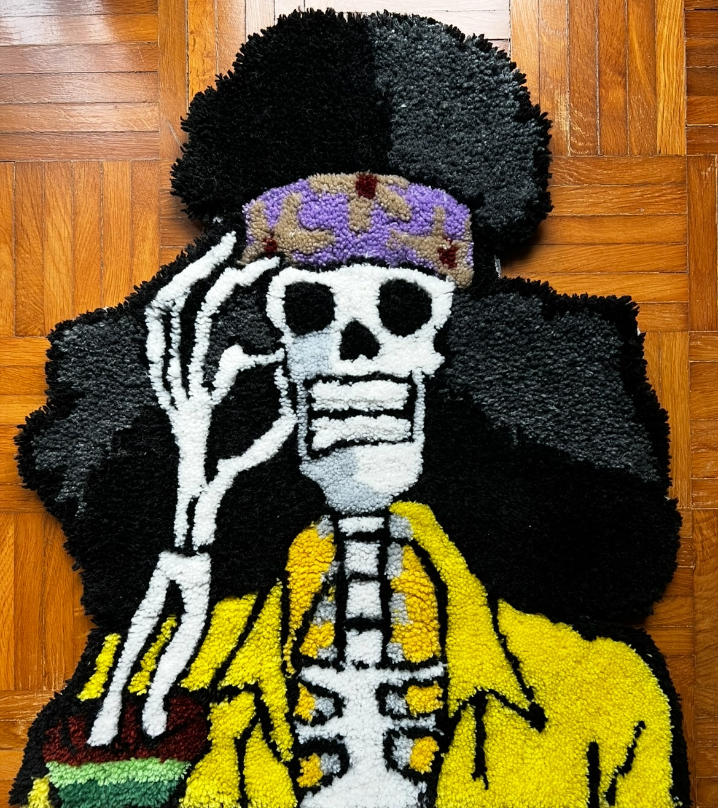
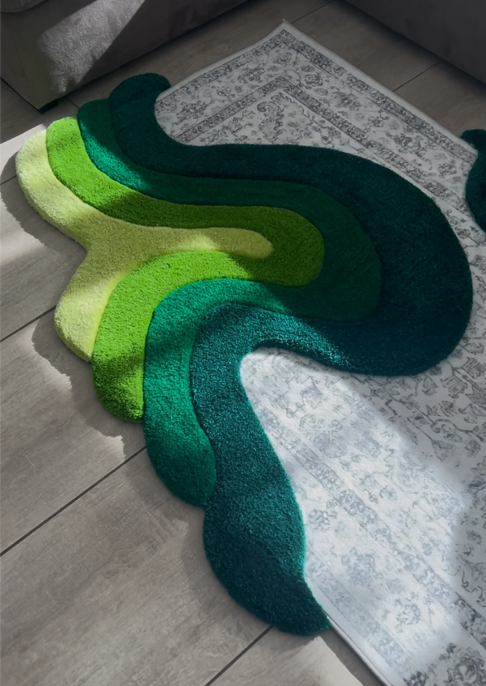
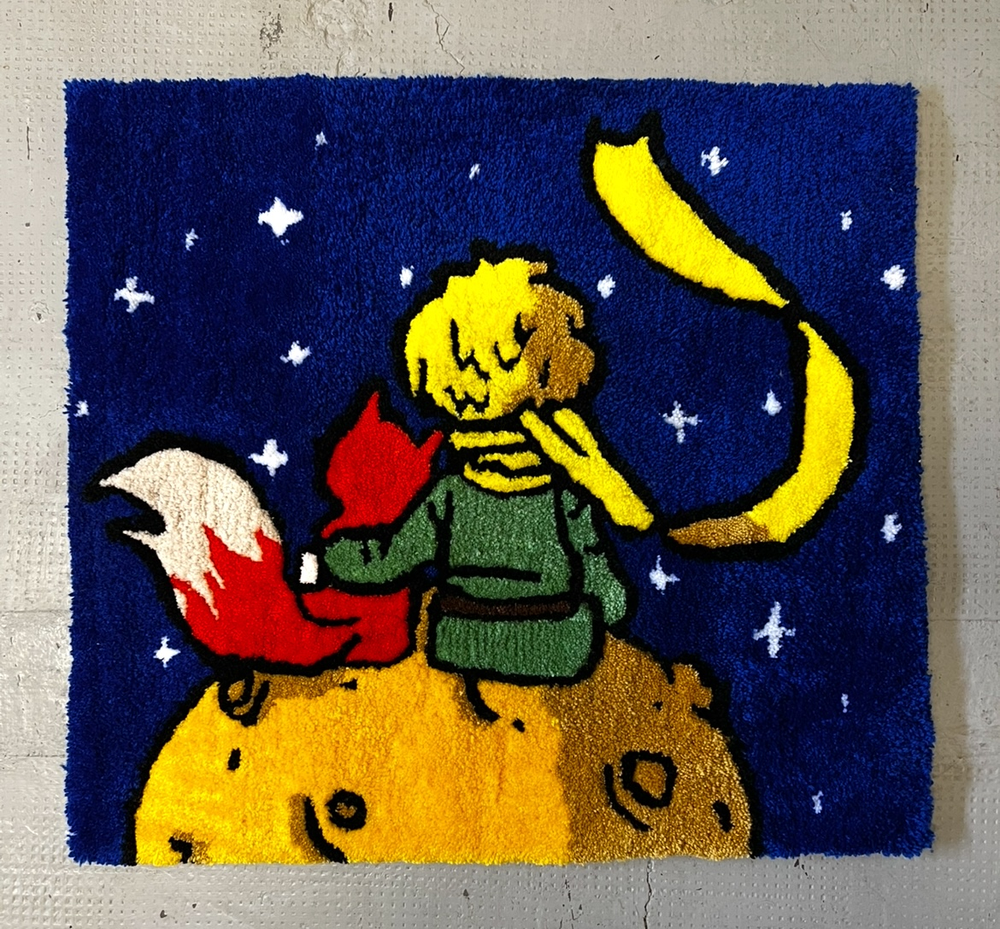

TUFTING · HOBBY CREATIVO · FATTO A MANO
Un’idea tua.
Un tappeto unico.
Il tufting è una passione che porto avanti nel tempo libero, tra esperimenti, colori e idee personali. Qui raccolgo i lavori che realizzo e, quando riesco, mi piace ascoltare nuove ispirazioni.
✳La tua idea, realizzata con cura.
FORM
& FEELING
MADE& FEELING
WITH CARE ✳ IMMAGINE SEGNA POSTO
ISPIRAZIONI CONDIVISE ✳FATTO A MANO, CON CALMA ✳
UNA GALLERIA MORBIDA
Cosa possiamo
creare insieme?
Ritratti, riferimenti pop, forme per gli interni e idee difficili da incasellare. Queste categorie sono solo un punto di partenza: possiamo mescolare linguaggi e ispirazioni per trovare il tuo.



Queste grafiche sono esempi provvisori: ogni progetto può essere personalizzato insieme a te.
OT
✳
✳
CIAO, SONO OUT TUFT
La tua idea.
La facciamo insieme.
Out Tuft nasce dal desiderio di dare forma alle idee delle persone. Possiamo progettare insieme il tuo tappeto: partiamo da ciò che ami, da un ricordo, da un personaggio o dai colori che immagini, e troviamo la soluzione giusta per te. Ogni progetto è una piccola collaborazione, realizzata a mano con attenzione.
VEDI I PROGETTI SU INSTAGRAM ↗TEXTURE
IS EVERYTHINGIMMAGINE SEGNA POSTO
IS EVERYTHINGIMMAGINE SEGNA POSTO
✳
TI VA DI FARE DUE CHIACCHIERE?
Hai un’idea
in mente?
Non serve avere tutto già deciso. Raccontami cosa vorresti realizzare: possiamo confrontarci su idee, forme, colori e dimensioni e progettare insieme qualcosa che ti somigli.
PROGETTIAMO INSIEME↗ PARTIAMO DALLA TUA IDEA ✳